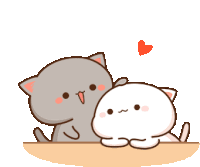
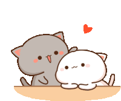

Hii, bb ik you clicked "yes" yk daghan kaayo ko e ingon sa imoha but first of all I wanted to thank you for being part of my life also being my woman not just a woman you're the reason why I keep living my life ever since you came into my life everthing was getting better and it's always been you that come first in my prayers. kabalo ka bb ever since that night were our path crossed I can't stop thinking nga what if "I didn't came? will I met you?" but I'm really glad that I came gud hahahhaah kung wala, wala koy gwapa nga buotan na uyab. bb every day with you feels like a blessing, but today is extra special because it marks another month of loving, growing, and sharing this beautiful journey together. I still remember the first time I heard your voice, the first time you smiled at me. this monthsary is not just a reminder of time passed, but a celebration of everything we've overcome together the late night talks, the inside jokes, the little fights, and all the moments that made us stronger. thank you for always being patient, kind, and real. thank you for choosing me every single day. I promise to keep choosing you too in every season, in every version of you, in every chapter of our story. I love you so much, Karyl. Today, tomorrow, and for all the months to come. and before I end this, I just want to say one more thing, love… thank you. thank you for loving me in ways I never thought I deserved. thank you for staying even when things weren’t perfect. thank you for your patience, for your softness, for your laughter, and even for your corny jokes that never fail to make me smile. I’m beyond grateful that you exist in this world, and even more grateful that I get to call you mine. You’ve shown me what real love feels like not just the butterflies, but the comfort, the safety, and the peace that comes with being seen and accepted. thank you for every effort you make, big or small. for every message you send, every moment you listen, and every time you remind me how much I mean to you. I’ll never take this you for granted. so here’s to us, to all the love we’ve shared, and to all the love we still have ahead. I’m grateful for you every single day, Karyl. you are my greatest blessing. thank you, my love. and Happy Monthsary again. 💖
 
